A swarm of 5,000+ agents in Autonomy conducting a deep code review.
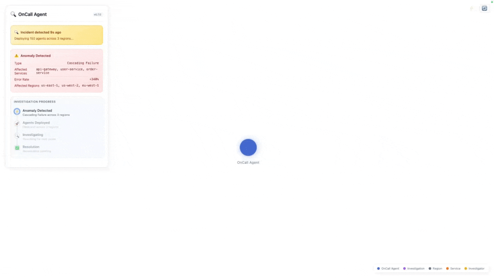
A swarm of 184 on-call SRE agents autonomously diagnose and fix incidents.
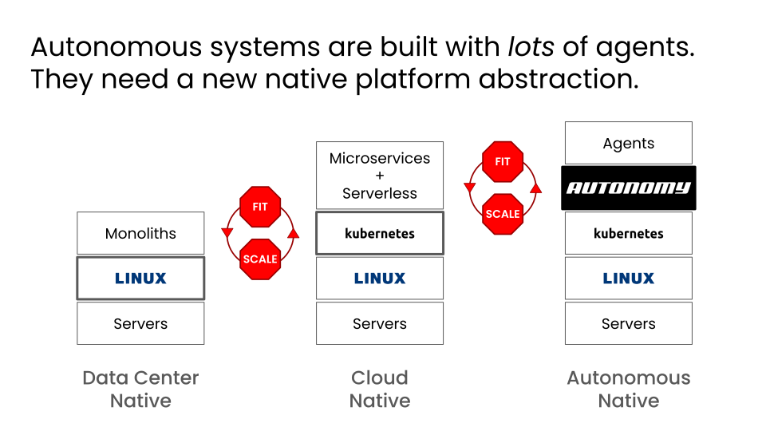
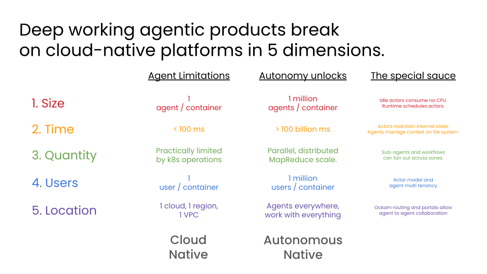
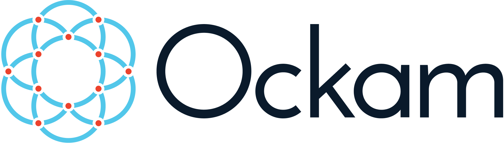
End-to-end encryption and mutual authentication from anywhere to anywhere.
Open source protocols, rust library, and infra to create cryptographic identities, establish mutual trust, and encrypt communication end-to-end across distributed systems.
Extremely high throughput, and low latency.
Formal cryptographic proofs, audited by Trail of Bits.
300+ contributors, 4600+ stars, developed over 7 years.
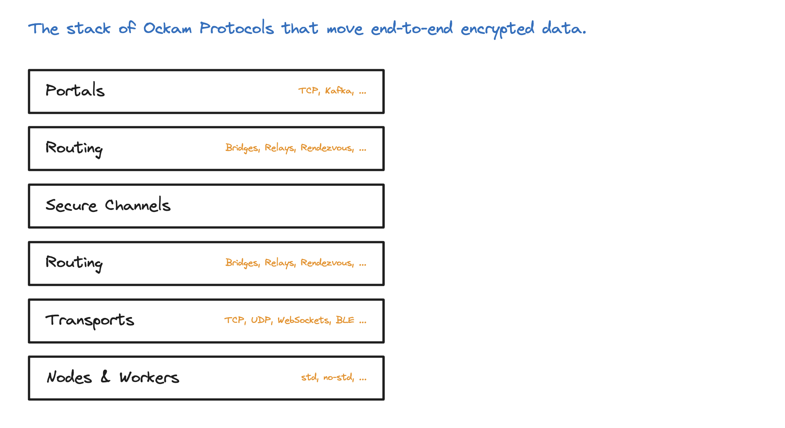
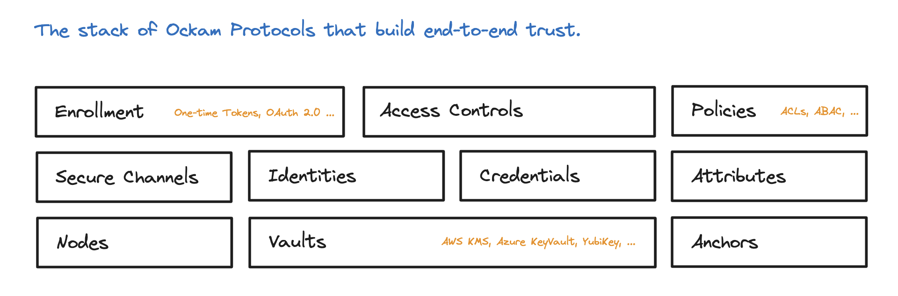
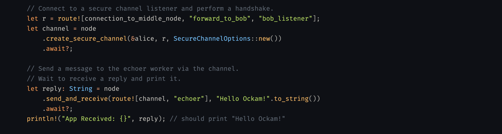
Agent Identity
- Identities – Who is this agent?
- Secrets – Where do the secrets live?
- Credentials – What can this agent do, and on whose behalf?
- Secure Channels – How do agents talk safely?
- Access Control – Can this agent do that?
- Traces – Who did what, and why?
Identities anchor the stack; credentials carry authority; secure channels authenticate both; access control authorizes actions; traces attribute decisions.
Do agents need their own identities?
There is a reasonable case that agents are just another type of application and don't need new identity infrastructure.
But agents don't behave like traditional software. Three things break:
- Attribution. Agents autonomously pick their own steps; the invoking user takes the blame.
- Distinct capabilities. Agents often need permissions the invoking user doesn't have.
- Delegation. Agents delegate to sub-agents; we need to identify every one of them.
Identities – Who is this agent?
TLS authenticates domains. OAuth authenticates accounts. Neither authenticates agents.
We need to authenticate each agent, authorize its actions, and attribute its decisions.
A cryptographic identity, rooted in a key pair, solves all three.
Identity – in Autonomy and Ockam
- Identifier is a hash, not a URL. The SHA256 hash of the first change in a cryptographic change history. Self-contained; no server, domain, or infrastructure dependency.
- Signed change history enables rotation. Each rotation appends a new change, signed by both the old and new key. The identifier stays the same.
- Provisioned in milliseconds. No CA, no DNS, no operator in the loop. Each agent creates its own identity locally.
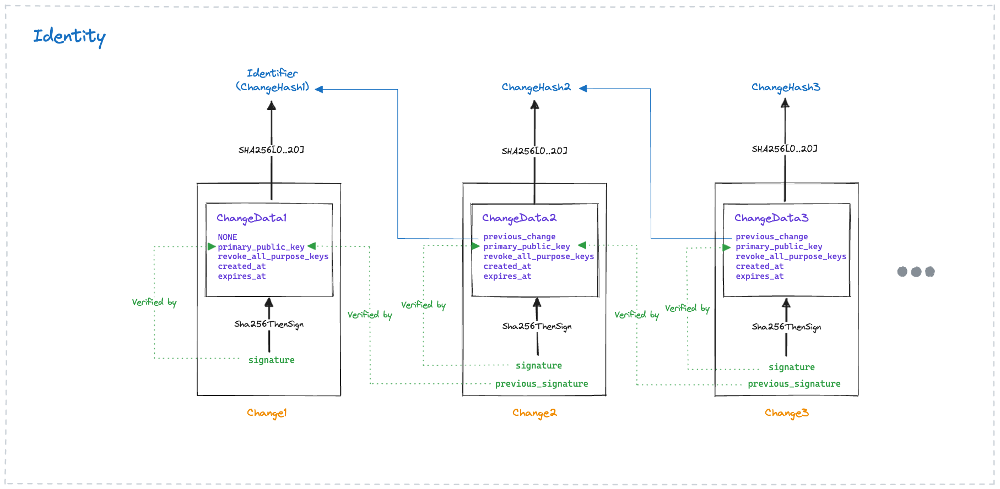
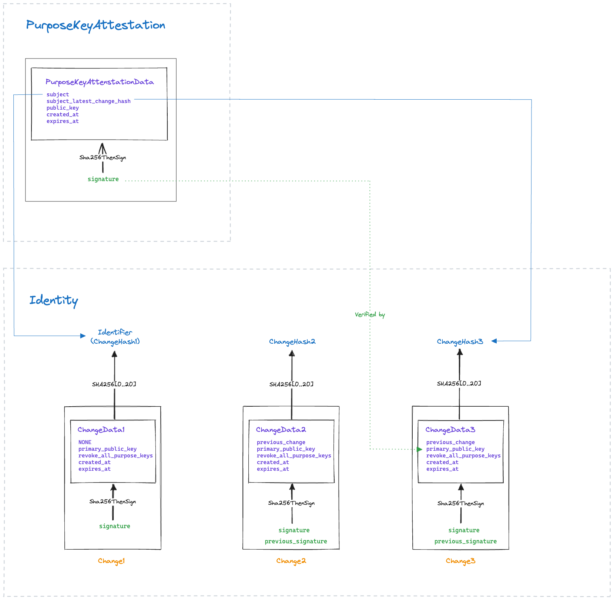
Purpose Keys – in Autonomy and Ockam
- Short-lived, dedicated to a purpose. Each purpose key serves one function: X25519 for secure channels, Ed25519 for signing credentials. Create many, keep them short-lived, rotate them often.
- Revoke all in one sweep. One change to the identity revokes every purpose key at once. The identifier stays the same; no broken credentials or trust chains.
Secrets – Where do the secrets live?
An agent holds two kinds of secrets: private keys that prove its identity, and bearer credentials like API tokens and passwords. Traditional software guards both behind fixed code paths. Agents act on external inputs, and can be manipulated into revealing any secret they can read.
A second problem. In common practice, every agent shares the same API key, the same database password, the same environment variable. One compromise exposes everything. No log can say which agent made which call.
A compromised agent should have nothing long-lived to reveal.
- Identity keys should live in a vault.
- Long-lived bearer credentials should stay behind a broker or a gateway.
- What the agent receives should be unique to the agent, scoped to the access it needs, and short-lived.
Vaults – in Autonomy and Ockam
-
Use without read. The vault returns opaque
handles, not key material. The agent calls
vault.sign(handle, data)and gets a signature back. The private key never crosses the vault boundary. - Pluggable backends, same interface. OS keychain, YubiKey, AWS KMS, software vault. One trait, many implementations.
Leased Secrets – in Autonomy and Ockam
- Identity-bound token leasing. The agent proves its identity over a secure channel. A lease issuer exchanges that proof for a short-lived, scoped token.
- Automatic lifecycle. Tokens refresh at half-TTL and revoke on expiry. Each agent gets its own scoped token.
- Alternative: gateway injection. A proxy intercepts outgoing requests and injects credentials at the transport layer. The agent never touches any secret at all.
Credentials – What can this agent do, and on whose behalf?
Identity says who. A credential says what, and on whose behalf.
Two kinds exist: bearer credentials like API tokens, which are secrets that must be brokered; and cryptographic credentials, signed statements verifiable without calling the issuer.
A credential should capture who delegated, for what purpose, for how long. Each delegation should only narrow authority, never amplify it. An agent should present its own identity; it should never impersonate the delegator.
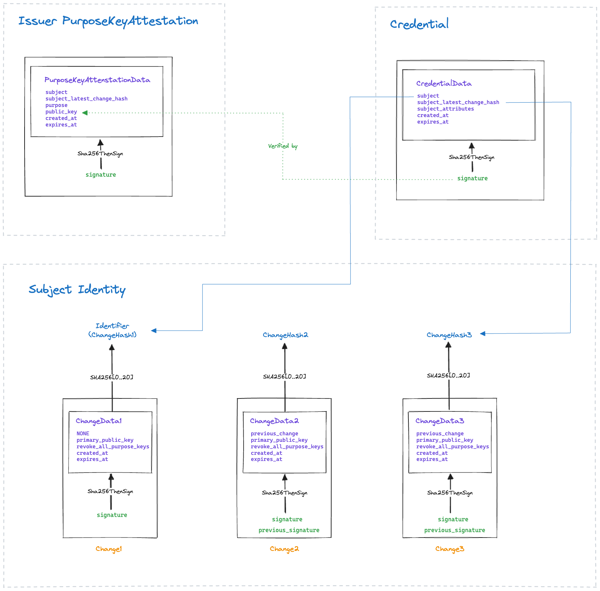
Credentials – in Autonomy and Ockam
- Short-lived, scoped, signed. Each credential carries typed attributes as key-value pairs, not opaque scopes. Bound to the subject’s Identifier. Default TTL: 30 minutes.
- Any identity can issue; trust is scoped. Issuance is permissionless. Whether an attestation is trusted depends on Trust Contexts: which issuer is authoritative for which attributes.
- Delegation as credential chains. Each delegation narrows authority. The agent never impersonates the delegator.
- Offline verification. The verifier checks the signature chain locally: issuer’s ChangeHistory, PurposeKeyAttestation, credential signature. Thousands of checks per second, no central bottleneck.
Enrollment – in Autonomy and Ockam
- One-time enrollment token. A provisioner asks the Authority to issue a single-use token with attributes. The ticket bundles the code with everything the new agent needs to find and authenticate the Authority.
- Local identity creation. The new node creates its own Ed25519 identity in milliseconds. No CA, no DNS, no operator in the loop.
- Secure channel + present token. The node opens a secure channel to the Authority and presents the one-time code. The Authority verifies, consumes the token, and adds the node as a member.
- Credentials issued. The Authority issues credentials with the enrolled attributes. The agent is now a project member.
Secure Channels – How do agents talk safely?
Agents act on what they receive. Compromised messages mean compromised actions. The communication channels to agents must guarantee message authenticity, integrity, confidentiality, and forward secrecy.
TLS authenticates domains, not agents. Bearer tokens identify accounts, not agents. Neither side knows who it is actually talking to. Agents must authenticate each other’s identifiers, attributes, and delegation context.
Relays, gateways, and load balancers see plaintext when TLS terminates at the boundary. End-to-end encryption runs between the two end agents. Intermediaries forward ciphertext they cannot decrypt.
Routing – in Autonomy and Ockam
- onward_route / return_route. Each message carries a route. Each hop removes itself from onward_route, adds itself to return_route. The reply travels back without the sender knowing the full path.
- Transport-agnostic, multi-hop. Routes span TCP, WebSocket, UDP, Bluetooth. Any number of intermediaries. Each hop forwards without reading the payload.
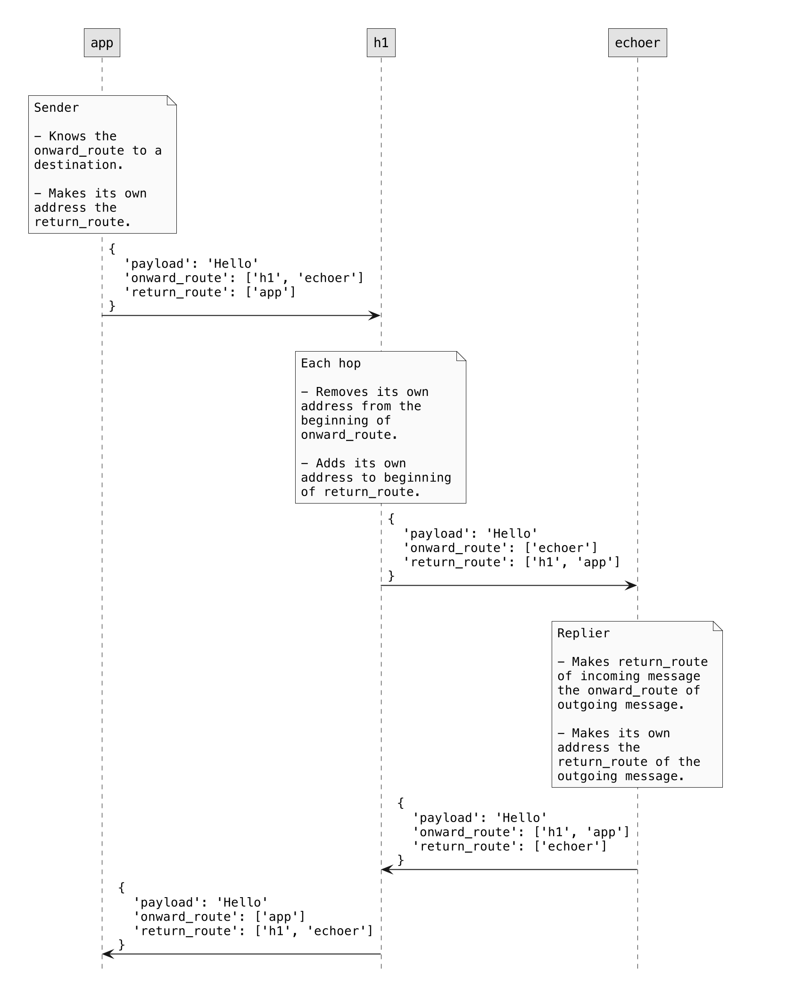
Multi-Hop Routing – in Autonomy and Ockam
- Sender decoupled from topology. The sender specifies a route, not connections. Add a relay, move a service, switch transports. The application does not change.
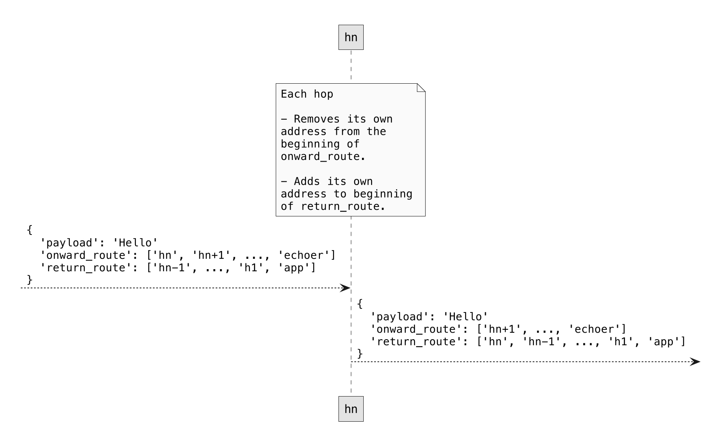
Secure Channels – in Autonomy and Ockam
- Between identities, not network addresses. The channel runs between two Ockam Identities. It works across TCP, WebSocket, relay. Topology does not matter.
- Noise XX: mutual auth in three messages. Both sides exchange and verify identities, purpose key attestations, and credentials during the handshake.
- No cipher negotiation. Compile-time choice (Noise_XX_25519_AESGCM_SHA256). No downgrade attacks. No fallback to weaker ciphers.
- Forward secrecy with rekeying. Ephemeral keys per session. Symmetric key rotated every 32 messages. Trail of Bits audited.
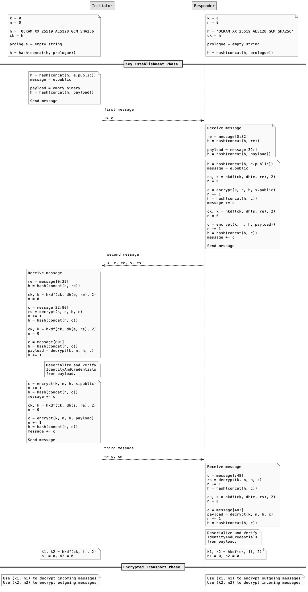
Portals – in Autonomy and Ockam
- TCP Portal = Inlet + Outlet. An Inlet listens on a local TCP port. An Outlet connects to a target TCP service. Between them: a secure channel through Ockam’s relay.
- Transparent to applications. Existing TCP clients and servers work unchanged. The portal handles encryption, routing, and identity verification.
- Private services, no public exposure. The target service stays in a private network. No public IP, no open firewall port. The secure channel reaches it through the relay.
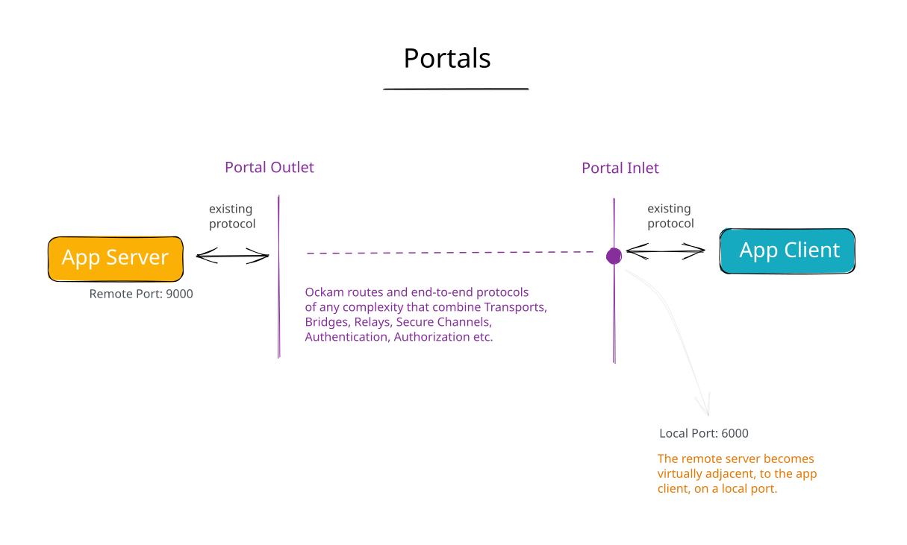
Access Control – Can this agent do that?
Agents choose tools autonomously. Every invocation must be evaluated: allow or deny. Access control must sit outside the agent, in infrastructure the agent cannot bypass.
Access Controls – in Autonomy and Ockam
- Cryptographically authenticated attributes. A single verified chain from authority to access decision.
- Three gates, all closed by default. Tool availability, invocation, external service. No policy = deny.
- ABAC policy language. S-expression boolean expressions over credential attribute names. Dynamic updates.
- Every invocation, not once at session start. Revoke mid-task; the next call is denied.
Policies – in Autonomy and Ockam
- Boolean expressions over attributes. Policies are S-expression boolean expressions. Operators: and, or, not, =, !=, member?, exists?. Each expression evaluates to true or false against the sender’s credential attributes.
-
Boolean shorthand. For simple attribute checks,
write
deploy_agent and staging_accessinstead of the full S-expression. Readable for operators, precise for machines. - Dynamic, distributed. Policies can be updated while workers are running. Manage centrally, distribute asynchronously. Enforcement is local, not centralized.
Traces – Who did what, and why?
An agent invokes a tool, interprets the result, decides what to do next. Traces capture every step: each tool invocation, each decision, each result. They are the audit trail and the debugging tool.
Not just “agent X did Y” but who authorized it, each intermediate agent, and the constraints each delegation imposed. The full delegation chain.
A log entry can be edited or fabricated. A record signed with the agent’s private key cannot be forged or repudiated. No agent is reliable on day one. Signed, attributable traces are how agents improve.